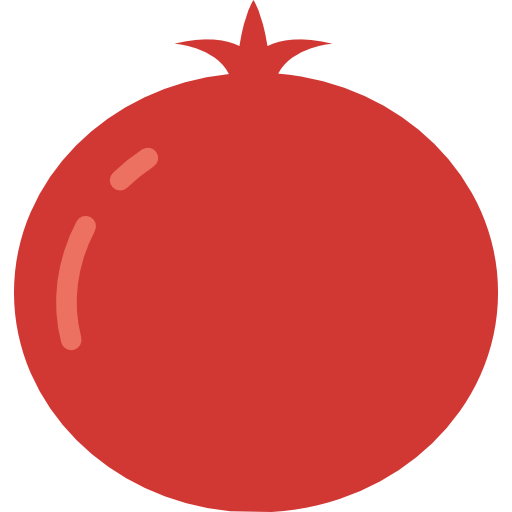
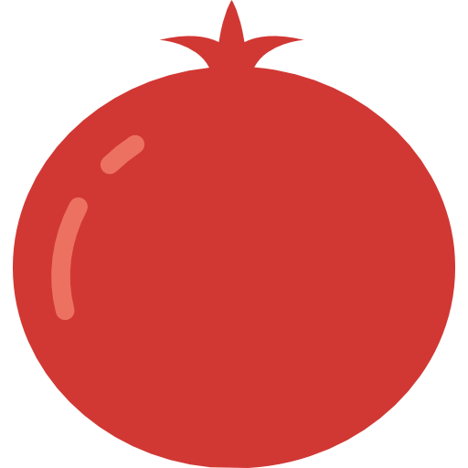

Personen Detail


Personen

Zutaten
Obst


 



Gemüse


Getreide und Getreideprodukte


Fleisch und Fisch


Milch und tierische Produkte


Gewürze und Kräuter


Rezepte
Kartoffelgulasch
Leckeres Kartoffelgulasch nach Oma's Rezept
00Einfache Mangoldknödel
Traumhaft saftige Knödel
00Wiener Schnitzel
Klassische Wiener Küche
00Kartoffelgulasch
Leckeres Kartoffelgulasch nach Oma's Rezept
01Einfache Mangoldknödel
Traumhaft saftige Knödel
01Wiener Schnitzel
Klassische Wiener Küche
00Kartoffelgulasch
Leckeres Kartoffelgulasch nach Oma's Rezept
00Einfache Mangoldknödel
Traumhaft saftige Knödel
00Wiener Schnitzel
Klassische Wiener Küche
00Rezeptname
Kurzbeschreibung